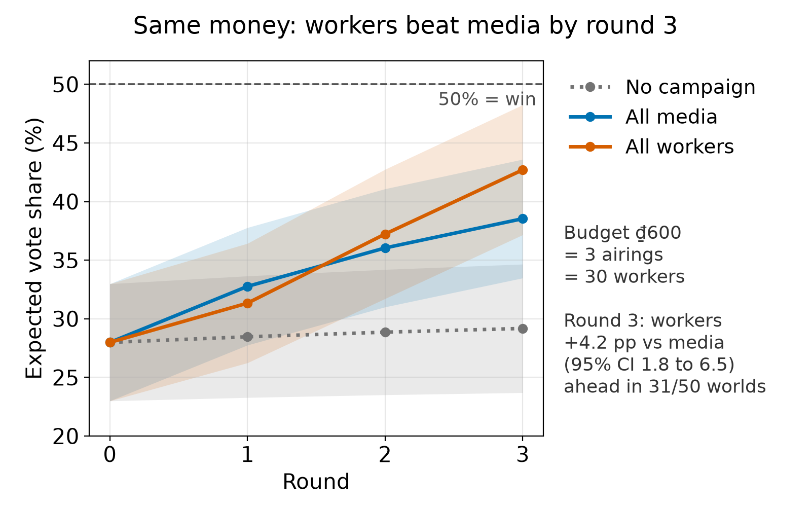

- World building: 2,500 voters in one region · 3 rounds · 20% manifesto · ₫600 = 3 airings = 30 round-1 workers.
- Media leads after round 1, but the worker cascade overtakes it from round 2.
- Worker influence pulls ahead by round 3: and they stay ahead in 30 of the 50 tested worlds.
- Both investments beat doing nothing.